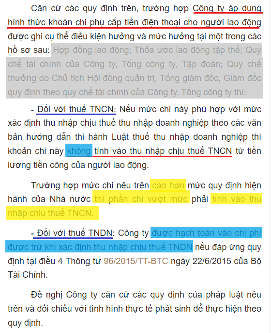

Phụ cấp điện thoại có được miễn thuế TNCN? Phụ cấp điện thoại có tính thuế TNCN? phụ cấp điện thoại tối đa là bao nhiêu? Phụ cấp điện thoại có phải đóng BHXH không?... Kế toán Diệu Tâm xin trích các quy định về khoản tiền phụ cấp điện thoại cho nhân viên:
1. Phụ cấp điện thoại có tính thuế TNCN không:
Căn cứ theo điểm 2 điều 2 Thông tư 111/2013/TT-BTC quy định:"Điều 2. Các khoản thu nhập chịu thuế
2. Thu nhập từ tiền lương, tiền côngThu nhập từ tiền lương, tiền công là thu nhập người lao động nhận được từ người sử dụng lao động, bao gồm:
đ) Các khoản lợi ích bằng tiền hoặc không bằng tiền ngoài tiền lương, tiền công do người sử dụng lao động trả mà người nộp thuế được hưởng dưới mọi hình thức:
đ.4.2) Đối với người lao động làm việc trong các tổ chức kinh doanh, các văn phòng đại diện: mức khoán chi áp dụng phù hợp với mức xác định thu nhập chịu thuế thu nhập doanh nghiệp theo các văn bản hướng dẫn thi hành Luật thuế thu nhập doanh nghiệp.
đ.4.3) Đối với người lao động làm việc trong các tổ chức quốc tế, các văn phòng đại diện của tổ chức nước ngoài: mức khoán chi thực hiện theo quy định của Tổ chức quốc tế, văn phòng đại diện của tổ chức nước ngoài."
------------------------------------------------------------
2. Mức phụ cấp điện thoại được trừ khi tính thuế TNDNCăn cứ theo điều 9 của Nghị định 320/2025/NĐ-CP hướng dẫn Luật thuế TNDN 2025 mới nhất hiện nay, quy định:
1. Trừ các khoản chi không được trừ quy định tại Điều 10 của Nghị định này, doanh nghiệp được trừ các khoản chi khi xác định thu nhập chịu thuế nếu đáp ứng đủ điều kiện tại các điểm a, b và c sau đây:
a) Khoản chi thực tế phát sinh liên quan đến hoạt động sản xuất, kinh doanh của doanh nghiệp, bao gồm cả khoản chi phí bổ sung được trừ theo tỷ lệ phần trăm tính trên chi phí thực tế phát sinh trong kỳ tính thuế liên quan đến hoạt động nghiên cứu và phát triển của doanh nghiệp;
b) Khoản chi có đủ hóa đơn, chứng từ theo quy định của pháp luật.
c) Khoản chi có chứng từ thanh toán không dùng tiền mặt đối với trường hợp mua hàng hóa, dịch vụ và các khoản thanh toán khác từng lần có giá trị từ 05 triệu đồng trở lên. Chứng từ thanh toán không dùng tiền mặt thực hiện theo quy định của các văn bản pháp luật về thuế giá trị gia tăng.
Căn cứ theo điều 10 của Nghị định 320/2025/NĐ-CP hướng dẫn Luật thuế TNDN 2025 mới nhất hiện nay, quy định:
Điểm b khoản 8) Các khoản tiền lương, tiền công, tiền thưởng cho người lao động không được ghi cụ thể điều kiện được hưởng và mức được hưởng tại một trong các hồ sơ sau:
- Hợp đồng lao động hoặc văn bản của doanh nghiệp nước ngoài cử người sang làm việc tại Việt Nam (đối với trường hợp người nước ngoài được điều chuyển hoặc di chuyển trong nội bộ Tập đoàn, giữa công ty mẹ với công ty con);
- Thoả ước lao động tập thể;
- Quy chế tài chính của Công ty, Tổng công ty, Tập đoàn;
- Quy chế thưởng do Chủ tịch Hội đồng quản trị, Tổng giám đốc, Giám đốc quy định theo quy chế tài chính của Công ty, Tổng công ty, Tập đoàn.
=>>> Các khoản chi này sẽ không được trừ khi xác định thu nhập chịu thuế
------------------------------------------------------------
Như vậy:- KHÔNG có quy định phụ cấp điện thoại tối đa là bao nhiêu. Có 2 trường hợp như sau:
a, Nếu khoản chi phí điện thoại cho người lao động phục vụ cho kinh doanh có hóa đơn hợp pháp ghi tên, địa chỉ, Mã số thuế Công ty => Thì được tính vào chi phí được trừ khi tính thuế TNDN và không phải tính vào thu nhập chịu thuế TNCN của người lao động.
b, Nếu là khoán chi => thì Mức khoán chi Phụ cấp điện thoại được miễn thuế TNCN phù hợp với mức xác định thu nhập chịu thuế TNDN.
- Mà các văn bản hướng dẫn về Luật thuế thu nhập doanh nghiệp như sau: “Phải ghi cụ thể Điều kiện được hưởng và mức được hưởng tại một trong các hồ sơ sau: Hợp đồng lao động; Thoả ước lao động tập thể; Quy chế tài chính của Công ty, Tổng công ty, Tập đoàn; Quy chế thưởng do Chủ tịch Hội đồng quản trị, Tổng giám đốc, Giám đốc quy định theo quy chế tài chính của Công ty, Tổng công ty.
+) Nếu mức khoán chi phụ cấp điện thoại ở trong mức mà DN quy định trong các hồ sơ trên => Thì khoản phụ cấp điện thoại được miễn thuế TNCN và được trừ khi tính thuế TNDN.
+) Nếu mức khoán chi cao hơn mức mà DN quy định trong các hồ sơ trên => Thì phần cao hơn đó sẽ bị tính thuế TNCN và bị loại khỏi chi phí được trừ khi tính thuế TNDN.
Nhưng: Các bạn cũng nên xây dựng cho hợp lý với tình hình thực tế của Doanh nghiệp nhé (đừng xây dựng mức khoán chi cao quá thực tế là bị loại đó nhé, vì chi không đúng thực tế, không liên quan đến hoạt động sản xuất kinh doanh).
Ví dụ: 1 nhân viên văn phòng đã được công ty trang bị cho 1 điện thoại bàn => Nhưng lại chi thêm phụ cấp điện thoại mấy triệu/tháng (thì không hợp lý).- Hoặc 1 nhân viên văn phòng (được trang bị điện thoại bàn) và 1 bạn nhân viên kinh doanh đi thị trường (không được trang bị điện thoại bàn và thường xuyên gọi cho khách hàng) => Thì phụ cấp điện thoại cho 2 bạn này nên ở mức khác nhau.
Xem thêm: Các khoản chi phí không được trừ khi tính thuế TNDN.
Việc tính thuế TNCN, thuế TNDN đối với khoản tiền phụ cấp điện thoại này được hướng dẫn chi tiết tại Công văn Số: 28810/CTHN-TTHT của Cục thuế Tp. Hà Nội ngày 17/05/2024
Chú ý: Nếu là các DN ở TP.HCM các bạn xem thêm 1 số công văn dưới bài viết nhé.
3. Phụ cấp điện thoại có phải đóng BHXH không:
Khoản 1 Điều 7 Nghị định 158/2025/NĐ-CP có hiệu lực từ ngày 01/7/2025
Tiền lương làm căn cứ đóng bảo hiểm xã hội bắt buộc được thực hiện theo quy định tại khoản 1 Điều 31 của Luật Bảo hiểm xã hội và được quy định chi tiết như sau:
1. Tiền lương làm căn cứ đóng bảo hiểm xã hội bắt buộc theo quy định tại điểm b khoản 1 Điều 31 của Luật Bảo hiểm xã hội là tiền lương tháng, bao gồm mức lương theo công việc hoặc chức danh, phụ cấp lương và các khoản bổ sung khác, trong đó:
a) Mức lương theo công việc hoặc chức danh tính theo thời gian (theo tháng) của công việc hoặc chức danh theo thang lương, bảng lương do người sử dụng lao động xây dựng theo quy định tại Điều 93 của Bộ luật Lao động được thỏa thuận trong hợp đồng lao động;
b) Các khoản phụ cấp lương để bù đắp yếu tố về điều kiện lao động, tính chất phức tạp công việc, điều kiện sinh hoạt, mức độ thu hút lao động mà mức lương tại điểm a khoản này chưa được tính đến hoặc tính chưa đầy đủ, được thỏa thuận trong hợp đồng lao động; không bao gồm khoản phụ cấp lương phụ thuộc hoặc biến động theo năng suất lao động, quá trình làm việc và chất lượng thực hiện công việc của người lao động;
c) Các khoản bổ sung khác xác định được mức tiền cụ thể cùng với mức lương theo quy định tại điểm a khoản này, được thỏa thuận trong hợp đồng lao động và trả thường xuyên, ổn định trong mỗi kỳ trả lương; không bao gồm các khoản bổ sung khác phụ thuộc hoặc biến động theo năng suất lao động, quá trình làm việc và chất lượng thực hiện công việc của người lao động.
Mà PHỤ CẤP ĐIỆN THOẠI lại thuộc các khoản bổ sung không xác định được mức tiền cụ thể cùng với mức lương
Theo điểm c2 khoản 5 Điều 3 Thông tư 10/2020/TT-BLĐTBXH quy định như sau:
5. Mức lương theo công việc hoặc chức danh, hình thức trả lương, kỳ hạn trả lương, phụ cấp lương và các khoản bổ sung khác được quy định như sau:
c2) Các khoản bổ sung không xác định được mức tiền cụ thể cùng với mức lương thỏa thuận trong hợp đồng lao động, trả thường xuyên hoặc không thường xuyên trong mỗi kỳ trả lương gắn với quá trình làm việc, kết quả thực hiện công việc của người lao động.
Đối với các chế độ và phúc lợi khác như thưởng theo quy định tại Điều 104 của Bộ luật Lao động, tiền thưởng sáng kiến; tiền ăn giữa ca; các khoản hỗ trợ xăng xe, điện thoại, đi lại, tiền nhà ở, tiền giữ trẻ, nuôi con nhỏ; hỗ trợ khi người lao động có thân nhân bị chết, người lao động có người thân kết hôn, sinh nhật của người lao động, trợ cấp cho người lao động gặp hoàn cảnh khó khăn khi bị tai nạn lao động, bệnh nghề nghiệp và các khoản hỗ trợ, trợ cấp khác thì ghi thành mục riêng trong hợp đồng lao động.
Như vậy:
- Khoản Phụ cấp điện thoại KHÔNG phải đóng BHXH.
Xem thêm: Các khoản phụ cấp không phải đóng BHXH.
4. Cách hạch toán tiền phụ cấp điện thoại cho nhân viên:
Lưu ý: Nhân viên được phụ cấp tiền điện thoại làm ở bộ phận nào => Thì các bạn hạch toán vào chi phí của bộ phận đó nhé.Ví dụ: Tiền phụ cấp điện thoại cho nhân viên A làm kế toán tại văn phòng công ty => Thì các bạn hạch toán vào Chi phí quản lý nhé:
5. Dưới đây là 1 số Công văn về phụ cấp điện thoại cho nhân viên các bạn tham khảo nhé:
|
Công văn của Tổng cục thuế: - Về Khoản chi tiền điện thoại cho cá nhân: +) Trường hợp Khoản chi tiền điện thoại cho cá nhân nếu được ghi cụ thể Điều kiện được hưởng và mức được hưởng tại một trong các hồ sơ sau: Hợp đồng lao động; Thỏa ước lao động tập thể; Quy chế tài chính của Công ty, Tổng công ty, Tập đoàn; Quy chế thưởng do Chủ tịch Hội đồng quản trị, Tổng giám đốc, Giám đốc quy định theo quy chế tài chính của Công ty, Tổng công ty được tính vào chi phí được trừ khi xác định thu nhập chịu thuế thu nhập doanh nghiệp thì Khoản chi tiền điện thoại cho cá nhân là thu nhập được trừ khi xác định thu nhập chịu thuế TNCN. +) Trường hợp đơn vị chi tiền điện thoại cho người lao động cao hơn mức khoán chi quy định thì phần chi cao hơn mức khoán chi quy định phải tính vào thu nhập chịu thuế TNCN.
(Theo công văn 1166 /TCT-TNCN ngày 21/3/2016 của Tổng cục thuế)
------------------------------------------------------------
Công văn của Cục thuế Hà Nội: - Trường hợp Công ty của Độc giả có khoán chi văn phòng phẩm, công tác phí, điện thoại,... cho người lao động phù hợp với mức khoán chi quy định tại quy chế tài chính hoặc quy chế nội bộ của doanh nghiệp thì Công ty được tính khoản chi này vào chi phí được trừ khi xác định thu nhập chịu thuế thu nhập doanh nghiệp (TNDN). - Người lao động nhận khoản chi trong mức khoán của Công ty thì không phải tính vào thu nhập chịu thuế TNCN. +) Trường hợp Công ty chi cho người lao động cao hơn mức khoán chi thì phần chi cao hơn mức khoán chi quy định phải tính vào thu nhập chịu thuế TNCN.
(Công văn 69792/CT-TTHT ngày 10/11/2016 của Cục thuế Hà Nội)
Căn cứ các quy định trên, trường hợp Công ty của Độc giả khoán chi tiền điện thoại cho người lao động nếu được ghi cụ thể điều kiện hưởng và một trong số các hồ sơ sau: Hợp đồng lao động; Thỏa ước lao động tập thể; Quy chế tài chính của Công ty, Tổng công ty, Tập đoàn; Quy chế thưởng do Chủ tịch Hội đồng quản trị, Tổng giám đốc, Giám đốc quy định theo quy chế tài chính của Công ty, Tổng công ty, được tính vào chi phí được trừ khi xác định thu nhập chịu thuế thu nhập doanh nghiệp thì khoản khoán chi này không tính vào thu nhập chịu thuế TNCN của người lao động.
(Công văn 2738/CT-TTHT ngày 18/1/2018 của Cục thuế TP. Hà Nội)
Căn cứ quy định nêu trên, trường hợp Công ty áp dụng hình thức khoán chi công tác phí, phụ cấp tiền điện thoại cho người lao động được ghi cụ thể Điều kiện hưởng và mức hưởng tại một trong các hồ sơ sau: Hợp đồng lao động; Thỏa ước lao động tập thể; Quy chế tài chính của Công ty, Tổng công ty, Tập đoàn; Quy chế thưởng do Chủ tịch Hội đồng quản trị, Tổng giám đốc, Giám đốc quy định theo quy chế tài chính của Công ty, Tổng công ty, nếu mức khoán chi áp dụng phù hợp với mức xác định thu nhập chịu thuế thu nhập doanh nghiệp theo các văn bản hướng dẫn thi hành Luật thuế thu nhập doanh nghiệp thì khoản khoán chi này không tính vào thu nhập chịu thuế TNCN.
(Theo Công văn 70027/CT-TTHT ngày 28/7/2020 của Cục thuế Hà Nội)
------------------------------------------------------------
Công văn của Cục thuế TP. Hồ Chí Minh:- Trường hợp Công ty chi hỗ trợ tiền điện thoại cho người lao động bằng tiền (thanh toán hàng tháng cùng với tiền lương) được quy định trong sổ tay nhân viên và chính sách, quy chế của Công ty hoặc tại Hợp đồng lao động thì khoản trợ cấp này là thu nhập từ tiền lương, tiền công và phải tính vào thu nhập chịu thuế TNCN của người lao động. - Trường hợp Công ty chi hỗ trợ tiền điện thoại cho người lao động để phục vụ sản xuất kinh doanh, có hóa đơn hợp pháp mang tên, địa chỉ và mã số thuế Công ty thì khoản chi trả này không tính vào thu nhập chịu thuế TNCN của người lao động.
(Theo Công văn 8214/CT-TTHT ngày 24/08/2017 của Cục thuế TP. Hồ Chí Minh)
Đối với khoản khoán chi tiền điện thoại theo mức cố định hàng tháng cho cá nhân nếu được ghi cụ thể điều kiện được hưởng và mức được hưởng tại một trong các hồ sơ sau: Hợp đồng lao động; Thỏa ước lao động tập thể; Quy chế tài chính của Công ty; Quy chế thưởng do Chủ tịch Hội đồng quản trị, Tổng giám đốc Công ty quy định theo quy chế tài chính của Công ty thì khoản khoán chi này Công ty được tính vào chi phí được trừ khi xác định thu nhập chịu thuế TNDN và tính vào thu nhập chịu thuế TNCN của người lao động.
(Công văn số 9597/CT-TTHT ngày 3/10/2017 của Cục Thuế TP. HCM)
Căn cứ quy định trên khoản chi phí điện thoại cho người lao động phục vụ cho kinh doanh có hóa đơn hợp pháp ghi tên, địa chỉ, Mã số thuế Công ty được tính vào chi phí được trừ khi tính thuế TNDN và không phải tính vào thu nhập chịu thuế TNCN của người lao động. - Khoản khoán chi tiền điện thoại cho người lao động được quy định cụ thể tại hợp đồng lao động Hợp đồng lao động; Thỏa ước lao động tập thể; Quy chế tài chính của Công ty, Tổng công ty, Tập đoàn; Quy chế thường do Chủ tịch Hội đồng quản trị, Tổng giám đốc, Giám đốc quy định theo quy chế tài chính của Công ty, Tổng công ty thì được xác định là chi phí tiền lương tính vào chi phí được trừ khi tính thuế TNDN, người lao động nhận được khoản thu nhập khoán theo mức cố định hàng tháng này phải tính vào thu nhập chịu thuế từ tiền lương, tiền công để kê khai nộp thuế TNCN theo quy định.
(Theo Công văn 10515/CT-TTHT ngày 24/10/2017 của Cục thuế TP. Hồ Chí Minh)
- Trường hợp Công ty có chi trả tiền phụ cấp điện thoại và nhà ở theo mức cố định hàng tháng cho người lao động thì khoản thu nhập này phải tính vào thu nhập chịu thuế TNCN của người lao động và được tính vào chi phí được trừ khi xác định thu nhập chịu thuế thu nhập doanh nghiệp. - Đối với phần khoán chi tiền điện thoại thực hiện theo đúng quy định tại Điểm đ.4 Khoản 2 Điều 2 Thông tư số 111/2013/TT-BTC thì không tính thuế TNCN.
(Theo Công văn 4451/CT-TTHT ngày 07/5/2019 của Cục thuế TP. Hồ Chí Minh)
|
Kế toán Diệu Tâm chúc các bạn làm tốt công việc kế toán!
Nếu bạn muốn học kê khai thuế tháng/quý, xác định các khoản chi phí được trừ - không được trừ, quyết toán thuế TNCN, TNDN cuối năm … có thể tham gia Khóa học kế toán thuế thực tế chuyên sâu.
------------------------------------------------------------